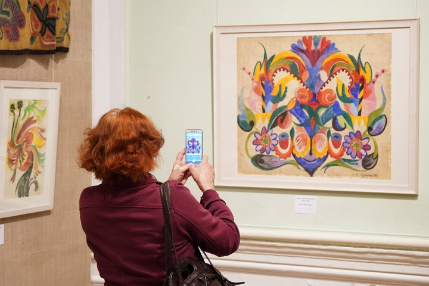
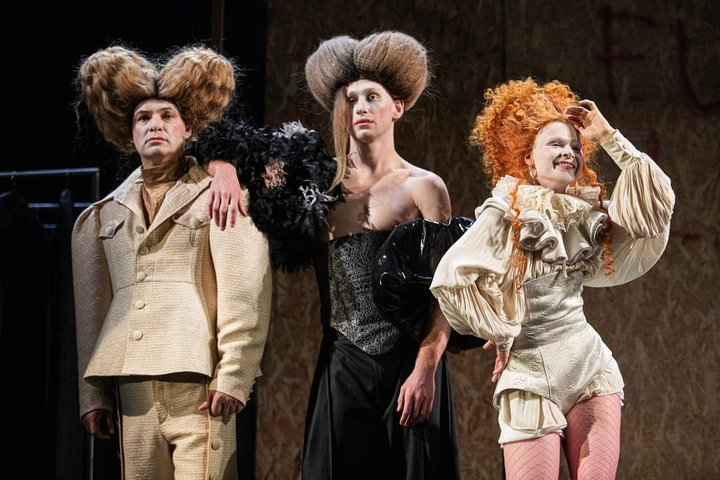
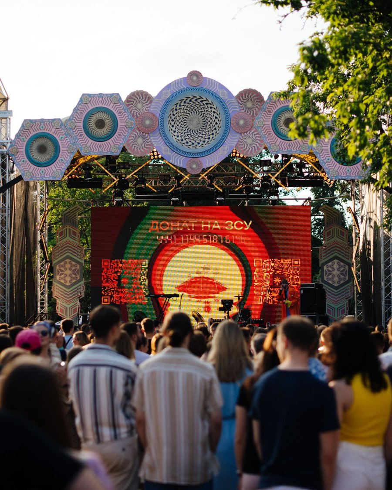
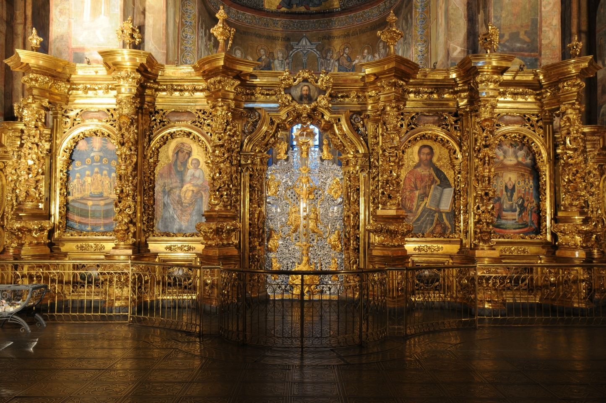

1. Відкриття нової виставки сучасного мистецтва в Києві

У Національному художньому музеї відкрилася експозиція українських авангардистів.

У Національному художньому музеї відкрилася експозиція українських авангардистів.

Режисер представив сучасне прочитання класичної п'єси.

Цими вихідними відбудеться щорічний фольклорний фестиваль.
Відомий історик випустив фундаментальне дослідження про розбудову міста.

Фахівці завершили перший етап збереження унікальних пам'яток XVI століття.